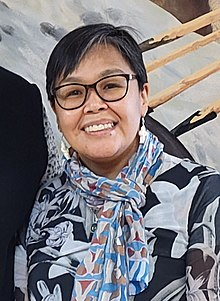

Indigenous in People in Politics
The Honorable Leonard Marchand (Liberal)

He is an important part to help reconciling with indigenous people by being the first person of
the First Nations to serve the liberal federal cabinet and dedicating a huge part of his career trying to
achieve an incredible feat of reconciliation for indigenous people by helping with the civil claims
to residential school survivors.
Gerry St. Germain (Conservative)
A former Canadian conservative senator who previously served the parliament and the first self-identified Métis to serve in Canada’s
Federal Cabinet, he spent most of his career advancing his current indigenous problems by resolving many reports on land claims, assisting
small indigenous businesses, and providing safe drinking water to Aboriginal communities.
Lori Idlout (New Democratic Party)

A former Canadian conservative senator who previously served the parliament and the first self-identified Métis to serve in Canada’s
Federal Cabinet, he spent most of his career advancing his current indigenous problems by resolving many reports on land claims, assisting
small indigenous businesses, and providing safe drinking water to Aboriginal communities.